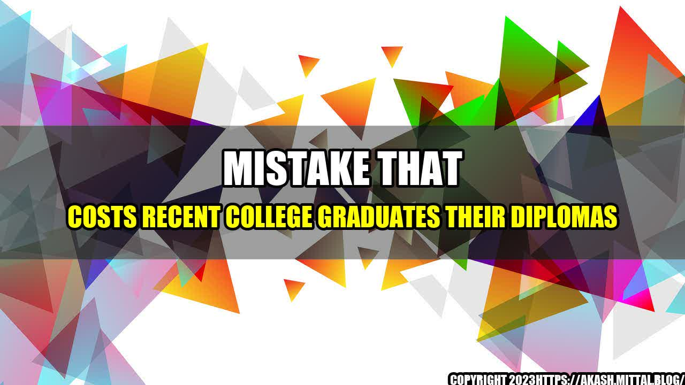

Mistake That Costs Recent College Graduates Their Diplomas

Her heart was racing as Mary signed into her student account and clicked the link to check her grades. She had just completed her final semester at college, and like many students, she struggled to stay focused and motivated during the online classes due to the COVID-19 pandemic. However, she had still managed to submit all her assignments and take all her exams as required.
But as she looked at the screen, her eyes widened in horror. There was an "F" in one of her courses, and it was a required course for her major. She read the professor's comment, which said that she had submitted a plagiarized paper. Mary's heart sank as she realized that she had made a critical mistake that would cost her much more than just her grade in that class. It would cost her diploma and her future career prospects.

Mistakes That Cost Graduates Their Diplomas
Mary's story is not unique. According to recent studies, many graduates make mistakes that cost them their diplomas every year. Here are some quantifiable examples of such mistakes:
- Plagiarism: As in Mary's case, submitting a plagiarized paper or project is one of the most common mistakes made by college students. According to a survey conducted by the International Center for Academic Integrity, 68% of undergraduate students admitted to cheating on exams or assignments in 2019.
- Missing deadlines: Another common mistake is missing deadlines. Whether it is for submitting assignments or registering for courses, missing deadlines can cause a lot of stress and anxiety for students. It can also lead to penalties and even failure.
- Not attending classes: Even though online classes have made attending classes more flexible, many students still skip class or fail to participate in discussions and group projects, which can lower their grades and jeopardize their future prospects.
- Ignoring academic advisers: Many students ignore or do not seek academic advice, which can lead them to enrol in courses that are not required or that do not meet their academic or career goals.
The above mistakes can cost students not only their diplomas but also their future careers, as they affect their academic records and their reputation in the job market.
Practical Tips to Avoid Mistakes That Cost Graduates Their Diplomas
Here are some practical tips that students can follow to avoid making mistakes that can cost them their diplomas and future careers:
- Understand academic integrity: Students should understand what constitutes academic integrity and avoid plagiarism and cheating by quoting sources properly and submitting original work.
- Create a schedule: Students should create a schedule and stick to it, avoiding last-minute or rushed submissions or assignments.
- Participate actively: Students should attend classes regularly, participate in discussions and group projects, and connect with their classmates and teachers to gain more knowledge and insight.
- Seek academic advice: Students should seek academic advice from their advisers or mentors and explore the courses and career paths that align with their goals and interests.
By following these tips, students can avoid making the mistakes that cost them their diplomas and future careers.
Conclusion
In conclusion, making mistakes is a part of life, but some mistakes can cost us more than others. As college students, we need to be aware of the mistakes that can cost us our diplomas and future careers and take steps to avoid them.
- We must understand academic integrity and avoid plagiarism and cheating.
- We must create a schedule and stick to it to avoid missing deadlines or submitting rushed or incomplete work.
- We must participate actively in classes and seek academic advice to choose courses and career paths that align with our goals and interests.
By following these tips, we can graduate with our diplomas and embark on successful careers that make us proud and fulfilled.
Reference URLs:
- https://www.thestreet.com/personal-finance/mistake-costs-recent-college-graduates-their-diplomas-15329652
- https://www.academicintegrity.org/
Hashtags: #college #graduates #diplomas #mistakes #plagiarism #deadlines #academicadvisers #academicintegrity #careersuccess
Article Category: Higher Education
Curated by Team Akash.Mittal.Blog
Share on Twitter Share on LinkedIn